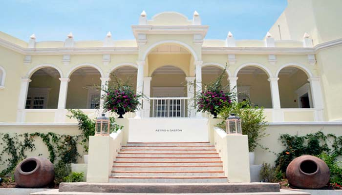
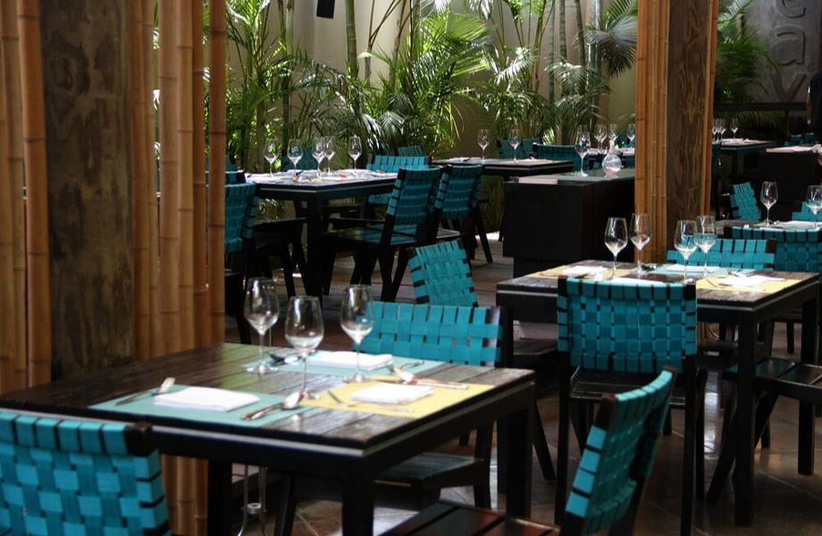
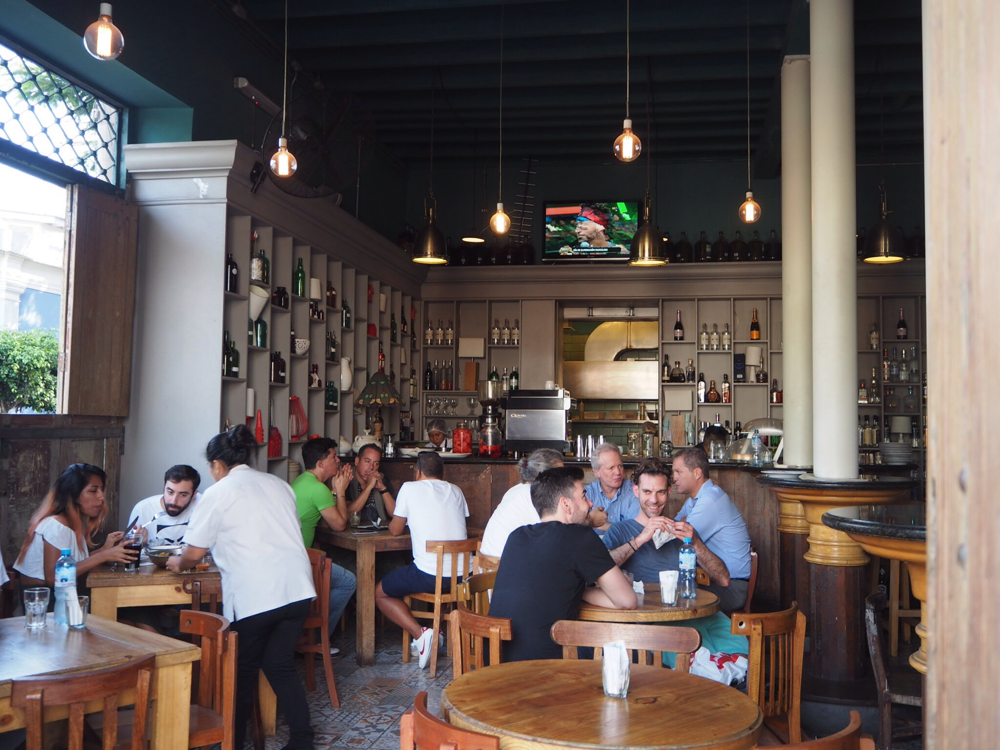
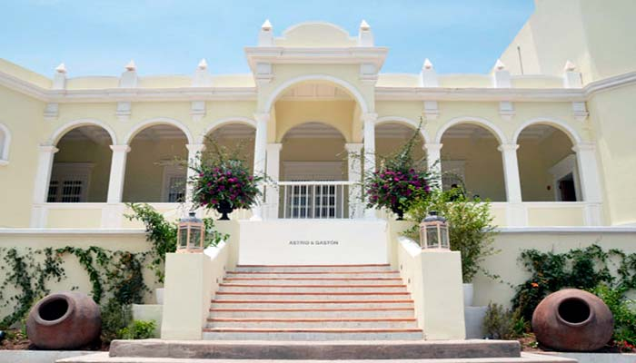
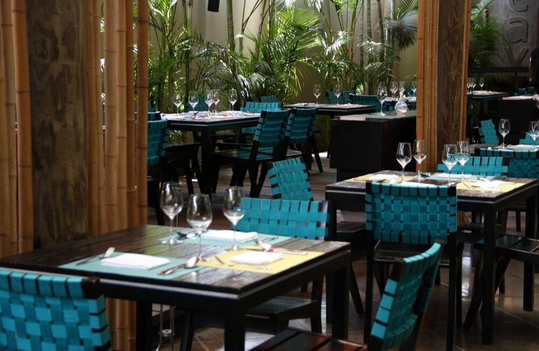
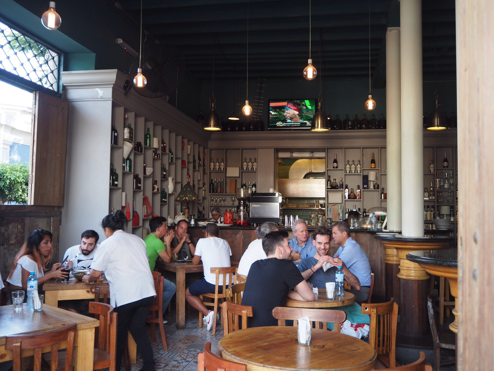

Restaurantes Peruanos
O Peru é conhecido por sua culinária rica e diversificada, e existem vários restaurantes renomados que oferecem pratos peruanos autênticos. Aqui estão alguns dos principais restaurantes de culinária peruana no Peru:

 






Central(Lima)
O Central é um renomado restaurante em Lima, fundado pelo chef Virgilio Martínez. Ele se dedica a explorar os diferentes ecossistemas do Peru e a destacar a diversidade de ingredientes locais. O restaurante é conhecido pelo seu conceito de "cozinha de altitude", onde cada prato é inspirado em uma altitude específica do país, desde o nível do mar até as montanhas mais altas. O Central já foi classificado como um dos 50 melhores restaurantes do mundo.
Maido(Lima)
O Maido é um dos principais representantes da culinária nikkei, que combina influências japonesas e peruanas. O chef Mitsuharu Tsumura cria uma experiência gastronômica única, apresentando pratos que exploram a fusão de sabores e técnicas de ambos os países. O restaurante oferece menus degustação que incluem uma variedade de pratos criativos, como tiraditos (prato semelhante ao ceviche), sushi nikkei e pratos quentes inspirados na culinária japonesa.
Astrid y Gastón (Lima)
Fundado pelo renomado chef Gastón Acurio, o Astrid y Gastón é um ícone da gastronomia peruana. O restaurante está localizado em uma bela casa colonial em Lima e oferece uma atmosfera elegante. O cardápio apresenta pratos clássicos da culinária peruana, mas com uma abordagem contemporânea e inovadora. O restaurante é conhecido por destacar ingredientes locais e ressaltar a riqueza dos sabores peruanos.
La Mar (Lima)
O La Mar é um restaurante especializado em frutos do mar e ceviches. Com um ambiente descontraído e vibrante, o restaurante oferece uma variedade de pratos frescos e saborosos, preparados com ingredientes da mais alta qualidade. Além dos ceviches tradicionais, o cardápio do La Mar apresenta uma variedade de opções, como tiraditos, causas (prato à base de batata) e pratos quentes com frutos do mar.
Isolina (Lima)
O Restaurante Isolina é um local popular em Lima, conhecido por sua cozinha tradicional e ambiente aconchegante. Localizado no bairro de Barranco, o restaurante oferece uma experiência autêntica da culinária peruana. O Isolina é especializado em pratos caseiros e clássicos da gastronomia peruana, com um toque de nostalgia. O cardápio apresenta uma variedade de opções, desde pratos emblemáticos até receitas menos conhecidas, mas igualmente deliciosas.
Rafael (Lima)
O restaurante Rafael, comandado pelo chef Rafael Osterling, é conhecido por sua abordagem criativa e moderna da culinária peruana. Localizado em um bairro boêmio de Lima, o restaurante oferece um ambiente acolhedor e uma cozinha inovadora. O cardápio apresenta pratos que combinam sabores peruanos tradicionais com influências internacionais. O chef Rafael é conhecido por seu uso de ingredientes frescos e sazonais, criando combinações de sabores surpreendentes.